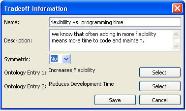
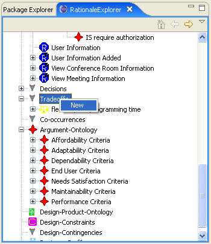
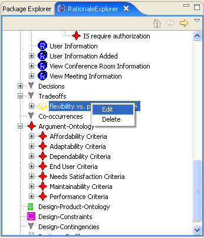

Tradeoff
The following figure shows the Tradeoff Editor. Tradeoffs are made between two Ontology
Entry items. Tradeoffs can be symmetric, which indicates that they are always
traded off against each other, or non-symmetric, which means the dependency is
one-way. For example, in this non-symmetric tradeoff, Ontology Entry 1,
Increases Flexibility, always needs to be traded off against Ontology Entry 2,
Reduces Development Time. This means that if a choice increases flexibility it
will increase development time. The other way around, however, is not true–if a
choice increases development time it is not necessarily because of added
flexibility.

In order to create a new tradeoff, right-click the "Tradeoffs"
in the RationaleExplorer and choose new, which will bring up the tradeoff
editor. Or we could edit an existing tradeoff by right-click the name of an
existing tradeoff and choose edit or by double-clicking the name of the
tradeoff. See the following figures:

